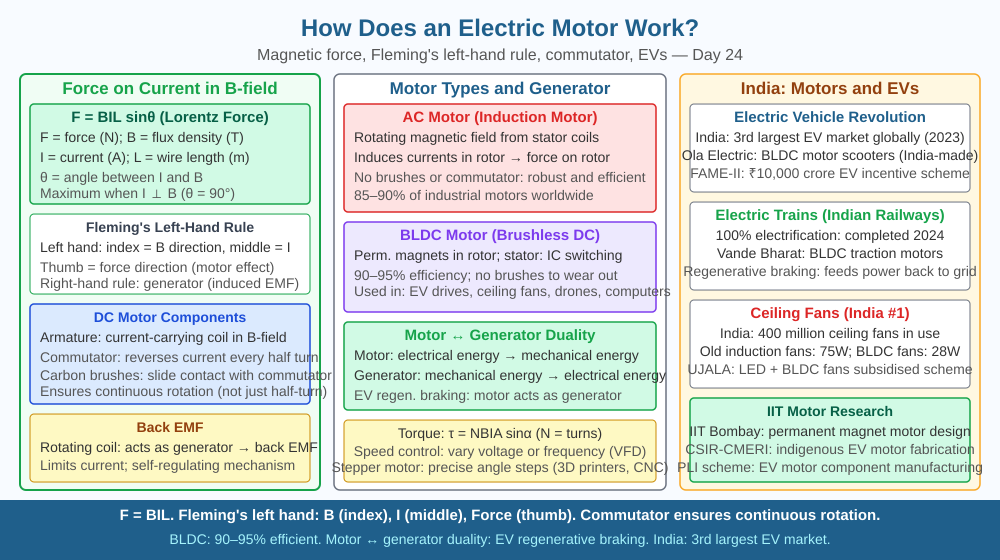

By the end of this lesson, you should be able to explain why a current-carrying coil rotates inside a magnetic field, name the role of the commutator, state the formula F = BIL, and predict what happens when the magnetic field strength is increased.
Inside every electric fan, washing machine, and metro train is a device that converts electrical energy into mechanical rotation. No burning fuel, no moving pistons — just a coil of wire, a magnet, and electric current. How does a wire carrying current manage to spin a shaft and move a machine weighing hundreds of kilograms?
The key is the Lorentz force: a current-carrying conductor placed inside a magnetic field experiences a mechanical force. The magnitude of this force is given by:
F = BIL
where B is the magnetic field strength (in tesla), I is the current (in amperes), and L is the length of the conductor inside the field (in metres). Double the current and the force doubles. Double the field strength and the force doubles again. This is not a curiosity — it is the entire engine of the modern world.
Fleming's left-hand rule gives the direction: hold the left hand with the forefinger pointing in the direction of the magnetic field (N to S), the middle finger pointing in the direction of conventional current, and the thumb points in the direction of the force on the conductor.
The DC motor — named parts and how they interact
A simple DC motor has four main components:
Armature coil — a rectangular loop of conducting wire wound on an iron core. When current flows through it, the two sides of the coil that lie inside the magnetic field each experience a force via F = BIL. Because the current flows in opposite directions in the two sides, the forces on them are opposite in direction (one pushes up, one pushes down). This creates a torque that rotates the coil.
Permanent magnets (or field magnets) — provide the external magnetic field B in which the coil sits.
Commutator — a split metal ring attached to the rotating coil. This is the clever part. Without it, once the coil rotates 180° the current direction in each side would reverse relative to the field, and the torque would reverse — the coil would just oscillate back and forth. The commutator swaps the electrical connections every half turn so that the force on each side always points in the same rotational direction. The coil therefore keeps spinning continuously.
Brushes — stationary carbon contacts that press against the commutator and carry current from the external circuit into the rotating coil.
Back-EMF: As the motor spins, the rotating coil cuts through magnetic field lines and by Faraday's law generates its own EMF in the opposite direction to the supply voltage. This back-EMF increases with speed and limits how fast the motor accelerates. At top speed, back-EMF nearly equals supply voltage and current drops to just enough to overcome friction.
AC motors work on a different principle: the alternating supply current itself reverses at 50 Hz (in India), so no commutator is needed — the field itself rotates (induction motor principle used in industrial fans, pumps, and trains).
Efficiency and torque: Motors are typically 85–95% efficient. The torque produced (τ = BILAN, where N is number of turns and A is coil area) can be increased by using a stronger magnet, more turns, larger coil area, or higher current. Engineers choose these parameters based on the required torque and speed for each application.
Think of the motor as a three-step force chain:
Remove any one element and the motor stops: no current → no force; no magnetic field → no force; no commutator (in a DC motor) → oscillation, not rotation.
Key quantities: - Stronger B → larger F → faster rotation / higher torque - More turns N → more total force → higher torque - Higher current → larger F (but also more heat via P = I²R)
The included SVG shows a rectangular coil between two magnet poles (N and S). Arrows on the two vertical sides of the coil show the current direction. Force arrows (using Fleming's left-hand rule) show one side pushed up and the other pushed down, creating clockwise torque. The commutator is shown as a split ring at the bottom with two brushes pressing against it. A label on the commutator reads "reverses current every half-turn to sustain rotation."

Electric motors are everywhere in India:
Understanding F = BIL lets engineers precisely calculate how much current is needed for a motor to lift a specific load, or how many turns to wind to achieve a target torque without overheating.
A DC motor is running at full speed when the supply voltage is suddenly halved. Use the relationship between back-EMF, supply voltage, and current to predict what happens to the motor's speed and current in the first few seconds after the change.
Hint: At full speed, back-EMF ≈ supply voltage and current is low. When supply voltage drops suddenly, how does the balance between back-EMF and supply voltage change? Does the motor slow down or speed up first? What happens to current and therefore force during that transition?
Write a step-by-step prediction before looking up the answer.
What is the core principle that makes an electric motor rotate?
Correct answer: b
Why is understanding the force on a current-carrying conductor more useful than just knowing motors turn?
Correct answer: b
What would happen to a motor's speed if the strength of the magnetic field were increased?
Correct answer: b
Explain today's concept to a younger student in 60 seconds without technical jargon. Then explain it again using the correct scientific vocabulary.
If both explanations describe the same mechanism, you have understood the concept rather than memorised it.
When you plug in an electric kettle and a motor simultaneously, the kettle (a resistor) simply converts electricity to heat — wasteful if unused. The motor, by contrast, develops back-EMF as it speeds up, which automatically reduces the current it draws. A motor running at full speed actually draws far less current than the same motor at the moment it starts from rest. This is why heavy motors need a "starter" circuit to limit the huge starting current — without one, the initial surge can trip a fuse or damage the winding insulation.
An electric motor rotates because the Lorentz force F = BIL acts on a current-carrying coil inside a magnetic field, and the commutator reverses current every half-turn to keep the torque pointing in the same direction — a stronger magnetic field exerts a greater force, producing faster rotation and higher torque.